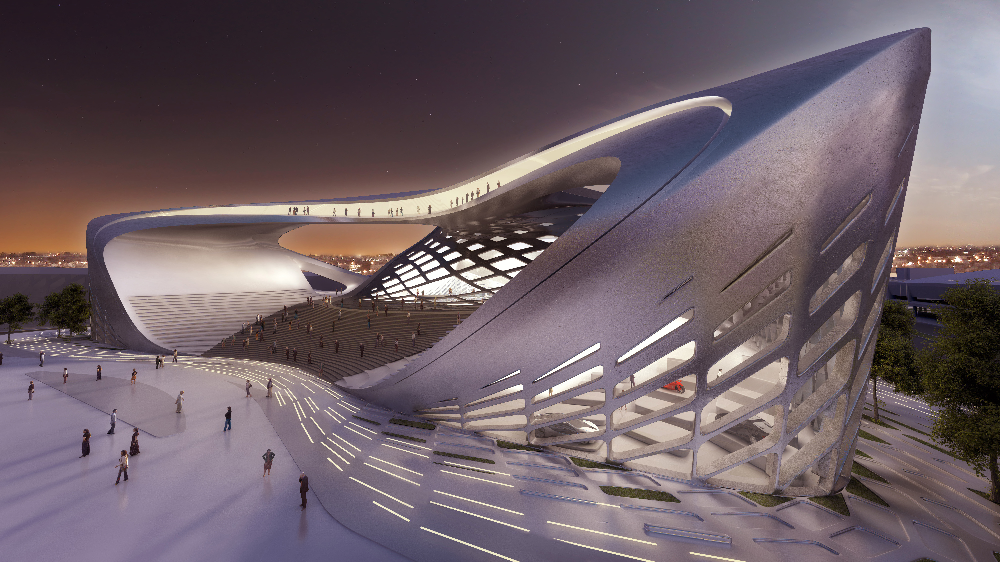

Composición paramétrica
El presente e-book marca el reinicio de un proyecto de hace ya varios años, el cual buscaba conjuntar diversas técnicas compositivas ─aplicables a cualquier estilo musical─. Por lo tanto, este e-book pretende ser un pequeño tratado sobre cómo componer música, esperando contribuir con ello, a una larga tradición pedagógica ideada por compositores desde el Medioevo hasta nuestros días, haciendo uso desde las técnicas contrapuntísticas hasta la composición espectral.
Si bien, entre los artistas ─y población en general─ el uso de la tecnología ha crecido con el paso del tiempo, las técnicas que se expondrán aquí, pueden compilarse de igual manera tanto con algoritmos en algún lenguaje de programación, o bien, desarrollarse directamente con papel y lápiz ─o el editor de partituras de su preferencia─, conforme la tradición de los compositores que nos antecedieron ─aunque siendo genios─, quienes sin computadora hacían uso de todo su conocimiento musical ─albergado en su cerebro─ para transformar una idea ─o estructura musical─ mediante técnicas contrapuntísticas, repeticiones o transposiciones de dicho material, incluso, cabe destacar, que dicha actividad era realizada ─y aún en nuestros días─ de manera espontánea cuando improvisaban una obra musical completa. Antes de que se expandiera el uso de la computadora, con la cual poder realizar cualquier vínculo transformador entre, alturas y ritmos, por ejemplo, los compositores tenían que dejar claras las separaciones entre los parámetros musicales.
En creatividad digital, existe un movimiento reciente, que ha tenido gran impacto en la arquitectura ─con Zaha Hadid y Patrik Schumacher─. Dicho movimiento es conocido como diseño paramétrico, el cual busca trascender la idea de espacio en la arquitectura.

ZHA Bogota Exhibition Centre